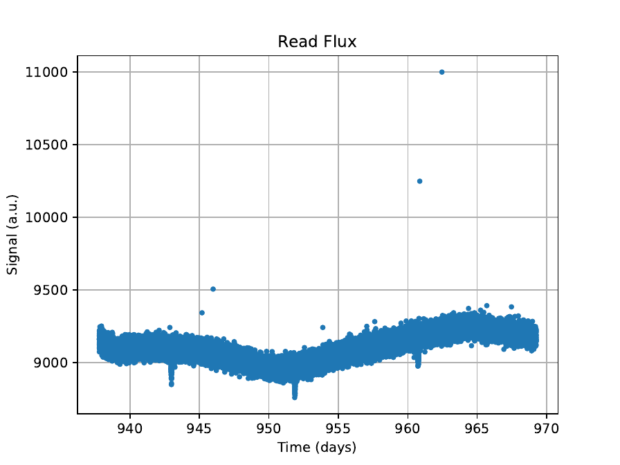
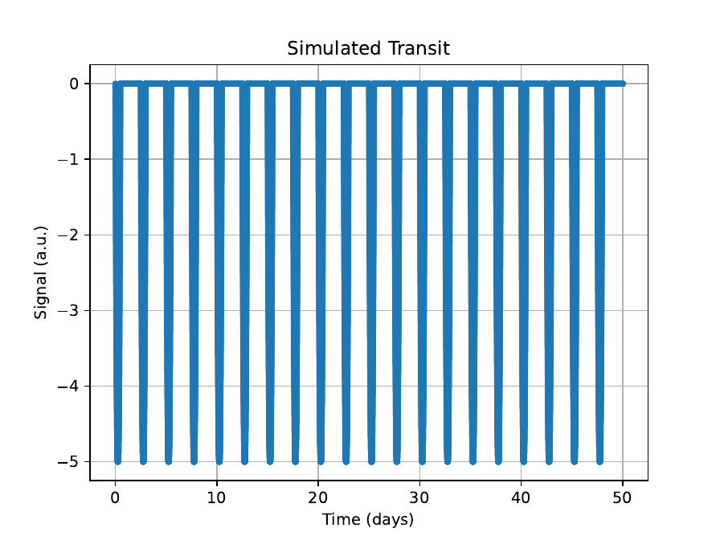
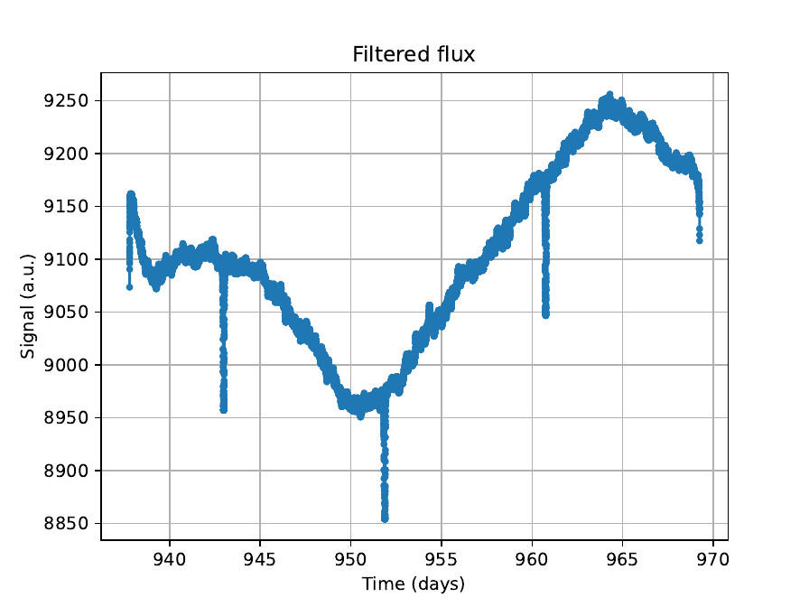
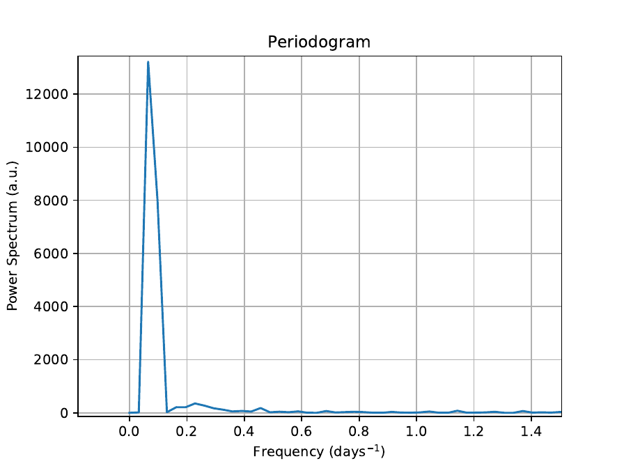
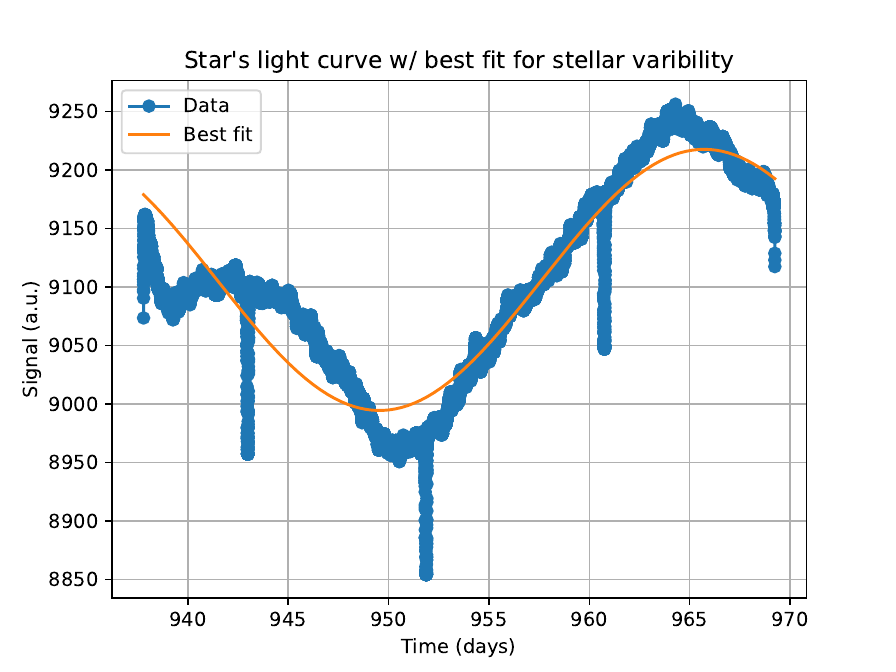

Bachelor’s degree project (TFG) · Universidad de Cantabria · June 2023
Simulation, detection and characterization of exoplanet transits with the Kepler space mission
Note: the PDF report is in Spanish.
Summary. In this Final Degree Project, exoplanet detection techniques and various data cleaning techniques obtained from the Kepler space telescope have been studied, going for the use of a median filter. Data from the Kepler satellite and its noise have been analyzed. Based on this information, a Python program has been developed to read and clean the data, enabling the characterization of the studied exoplanet as long as the mass, radius, and temperature of the star are known. To verify the functionality of the program, various simulations have been conducted. Once it has been confirmed that the developed program returns numerical values consistent with the input values, the effectiveness of this data cleaning method has been tested. The main advantage of this method is that, regardless of the amount of noise, it is capable of accurately obtaining the period of the planetary transit. However, it excessively relies on fitting the stellar variability to a sine function.
1. Introduction
During the last decade, the discovery and characterization of exoplanets (planets orbiting stars other than the Sun) has had a great scientific relevance and social impact. To date, there are more than five thousand confirmed exoplanets in almost four thousand planetary systems, with almost ten thousand more possible candidates awaiting confirmation. Many of these discoveries are due to the Kepler space observatory, which collected data from thousands of stars between 2009 and 2018. Said data are publicly available and many of them have not yet been fully analyzed.
1.1. Exoplanets and detection methods
An exoplanet (or extrasolar planet) is one that orbits a star other than the Sun. As a general rule, planets reflect part of the light from their star. This reflection is usually very faint compared to the brightness of its star, making direct detection practically impossible (only 67 exoplanets have been detected this way). At present, there are several indirect methods for detecting exoplanets:
Radial velocity method: based on the Doppler effect — the relationship between the emitted frequency and the received frequency. This method is only effective for very massive exoplanets very close to their orbiting star, and has confirmed more than a thousand exoplanets [1].
Astrometry method: studies the movement of the star around the centre of mass of the star-planet system. To date, this method is incredibly difficult to carry out (only two exoplanets have been confirmed) [1].
Gravitational microlensing: takes advantage of the deviations that light from a star suffers when a massive body is between a star and the observer. The star appears brighter than without this massive body [1].
Transit method: consists of the study of periodic decreases in the intensity of a star’s light. These decreases are caused by the passage of a body between the observed star and the observer. The depth and duration of the transits can provide a lot of information about the exoplanet that causes them [1]. This is the method adopted in this work — the most effective to date, with more than 4000 confirmed exoplanets.
1.2. Orbits and transits
The eccentricity of an orbit quantifies its deviation from a perfect circle:
where $r_a$ is the apoapsis radius and $r_p$ the periapsis radius. In this work, a parabolic transit model has been assumed. The light curve of a star with parabolic transits, $B(t,P,t_0,d,p)$, is defined by
where $t$ is time, $P$ the orbital period, $t_0$ the centre of any transit, $d$ the transit duration and $p$ the depth.
1.3. Period determination via the FFT
The Fast Fourier Transform (FFT) is used to determine the orbital period from the transit light curve. The FFT is:
where $\tilde{F}$ is the discrete transform, $N$ the length of the signal and $F_n$ each data point. Each maximum in the power spectrum is a repetition frequency. The orbital period is the inverse of the dominant frequency $f_{\rm dom}$:
1.4. Noise in the signal
In 2020, Jakob Robnik and Uroš Seljak determined that the Kepler signal noise has a Gaussian component and another component due to non-Gaussian noise following a Non-Central $t$ distribution (NCT). The probability density function is [5][6]:
where $\nu$ indicates the degrees of freedom, $\delta$ is the non-central parameter and $\sigma$ is the standard deviation.
1.5. The Kepler mission
The Kepler space mission collected data on stars in our region of the Milky Way, specifically in the region of the Lyra and Cygnus constellations, with the aim of detecting and characterizing exoplanets from their transits in the light curves of the stars. The photometer on board Kepler had an array of 42 CCDs in the focal plane, each with more than 2.5 million pixels. The CCDs were read every three seconds to avoid saturation. Only data from stars with a magnitude greater than 16 in the red wavelength ($\lambda_{\rm red}=674$ nm) were saved. The photometer was sensitive enough to detect Earth-sized planet transits orbiting a G2V star (similar mass and temperature to the Sun) with apparent visual magnitude 12.
Due to the rotation of $90^\circ$ that the satellite undergoes every three months (to keep its solar panels facing the Sun), there are interruptions in the data from each star every 90 days. This causes changes in the systematic errors of the photometer, which must be taken into account when analyzing the data.
1.6. The median filter
To remove stellar variability from the Kepler light curves, a median filter has been used. The median filter replaces each point with the median of a window of points around it. Its main advantage is that, by using the median instead of the mean, it is not sensitive to extreme values (such as transits), making it a robust estimator of the stellar baseline. The filtered light curve is then the original curve divided by this baseline estimate.
2. Methodology
2.1. Data simulation
To verify the program, synthetic Kepler light curves have been generated. These consist of: (1) a sinusoidal stellar variability component with amplitude $A_{\rm var}$, period $P_{\rm var}$ and phase $\phi_{\rm var}$, (2) a transit signal with the parabolic model of Equation 1.2, and (3) noise with a Gaussian component (standard deviation $\sigma$) and a NCT component. The program is then run on these synthetic curves and the recovered parameters are compared with the injected values.
2.2. Data cleaning
Signal noise: The NCT noise component of the Kepler signal has been modelled and subtracted. This component comes from systematic instrumental errors such as temperature changes in the aperture or the orbit that the satellite follows [5].
Stellar variability: The long-term variability of the stellar light curve has been removed using the median filter. The window of the median filter must be chosen to be large enough to not distort the transit signal (much smaller than the transit duration) but large enough to smooth the stellar variability (much larger than the stellar variability period). The optimal window has been determined by testing different values and evaluating the relative error in the recovered period.
2.3. Effectiveness of the method
The dependence of the relative error in the recovered period has been obtained by varying different parameters: the noise amplitude $\sigma$, the transit depth $p$, the transit duration $d$, the transit period $P$, the stellar variability amplitude $A_{\rm var}$, the stellar variability period $P_{\rm var}$, the stellar variability phase $\phi_{\rm var}$, and the median filter window size. The highest dependence is found when altering the periods of the planetary transit and, to a greater extent, the period of stellar variability.
2.4. Exoplanet characterization
Once the transit period $P$ is determined from the FFT, the transit signal is extracted by phase-folding the light curve at the detected period. The following parameters are then fitted to the phase-folded transit:
The transit depth $p$ gives the planet-to-star radius ratio:
The transit duration $d$ combined with the orbital period $P$ and the stellar radius $R_\star$ gives the orbital semi-major axis $a$:
where $b = a\cos i / R_\star$ is the impact parameter and $i$ is the orbital inclination. Combined with the stellar mass $M_\star$, Kepler’s third law gives the orbital period as a consistency check:
The planetary radius is then $R_p = (R_p/R_\star)\cdot R_\star$. The equilibrium temperature of the planet is estimated as:
where $T_\star$ is the stellar effective temperature and $A_B$ is the Bond albedo (assumed $A_B=0$ for a conservative estimate).
3. Results
3.1. Simulation results


The program was tested using synthetic data with controlled parameters. Once it has been confirmed that the developed program returns numerical values consistent with the input values, the dependence of the relative error has been studied. The main result is that the relative error in the period depends most strongly on the ratio between the transit period and the stellar variability period: when these are similar, the median filter cannot cleanly separate the two signals, leading to larger errors.
3.2. Application to real Kepler exoplanets
TrES-2b
TrES-2b is a hot Jupiter orbiting TrES-2, a G0V star. The pipeline was applied to the Kepler photometry of TrES-2 and the recovered parameters agree with the published values within errors.
Kepler-75b
Kepler-75b is a hot Jupiter with an eccentric orbit. The pipeline was applied to the Kepler photometry of Kepler-75. The results are shown in Figures 3.3–3.5.



4. Conclusions
In this Final Degree Project, a Python pipeline has been developed to simulate, detect and characterize exoplanetary transits in Kepler photometry. The pipeline consists of: (1) reading and cleaning the Kepler data using a median filter, (2) determining the orbital period using the FFT, and (3) characterizing the exoplanet by fitting the parabolic transit model. The pipeline has been validated on synthetic light curves and applied to the real Kepler targets TrES-2b and Kepler-75b, recovering planetary parameters consistent with published values.
The main advantage of this method is that, regardless of the amount of noise, it is capable of accurately obtaining the period of the planetary transit. The main limitation is its excessive reliance on fitting the stellar variability to a sine function. This leads to a significant error source, mainly because the variability of stars is often not described by such a curve, nor does it necessarily follow this type of oscillation. The highest dependence of the relative error comes from varying the periods of the planetary transit and, above all, the period of the stellar variability.
Bibliography
- [1] NASA Exoplanet Exploration. 5 ways to find a planet. Available: https://exoplanets.nasa.gov/5-ways-to-find-a-planet/
- [2] Orfanidis, Sophocles J. Introduction to signal processing. Prentice Hall, 1995.
- [3] Proakis, John G. and Manolakis, Dimitri K. Digital signal processing: principles, algorithms, and applications. Prentice Hall, 1996.
- [4] Stoica, Petre and Moses, Randolph. Spectral analysis of signals. Prentice Hall, 2005.
- [5] Robnik, J. and Seljak, U. “Kepler data analysis: Non-Gaussian noise and Fourier Gaussian process analysis of stellar light curves.” The Astronomical Journal, 159(5), 224, 2020.
- [6] Aigrain, S. and Foreman-Mackey, D. “Gaussian process regression for astronomical time series.” Annual Review of Astronomy and Astrophysics, 61, 2023.
- [7] Johnson, N.L., Kotz, S. and Balakrishnan, N. Continuous Univariate Distributions, Vol. 2. John Wiley & Sons, 1995.
- [8] Casella, G. and Berger, R.L. Statistical Inference. Duxbury Press, 2002.
- [9] Orosz, J.A. et al. “Kepler-47: a transiting circumbinary multiplanet system.” Science, 337(6101), 1511–1514, 2012.